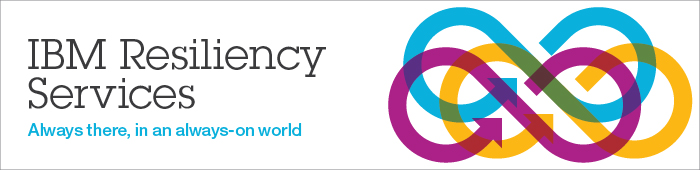

<ion-view title="IBM RapidOpenProvisioning"  hide-back-button="true" ng-controller="HomepageCtrl" >
  <ion-nav-buttons side="left">
    <button menu-toggle="left"class="button button-icon icon ion-navicon"></button>
  </ion-nav-buttons>
  <ion-content class="has-header">
 
  <div id="wfe" class="card" sstyle="padding: 4px">
   <div class="item item-divider">
    Welcome to IBM Rapid Open Provisioning
    </div>
	 <div class="item item-text-wrap">
	 
     </div>     
	
	
	
  </div> 
 

  </ion-content>
  
<div class="bar bar-footer bar-positive">
  <div class="title">Footer</div>
</div>

</ion-view>